El análisis de estadísticos descriptivos permite resumir, organizar y entender los datos de una investigación. En IBM SPSS, estas herramientas ayudan a identificar tendencias, patrones y variabilidad en la información recolectada. Los principales análisis incluyen:
● Medidas de tendencia central
● Medidas de dispersión
● Análisis de frecuencias
● Análisis de respuestas múltiples
Las medidas de tendencia central indican el valor representativo de un conjunto de datos.
Es el valor promedio de una variable numérica (escala).
1. Lo primero que se debe de hacer es ir al menú
2. Ir a Analizar
3. Seleccionar Estadísticos descriptivos
4. Dar clic en Descriptivos
5. Pasar la variable deseada al cuadro derecho
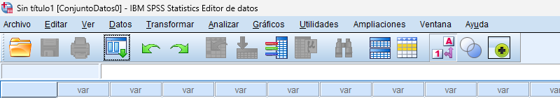
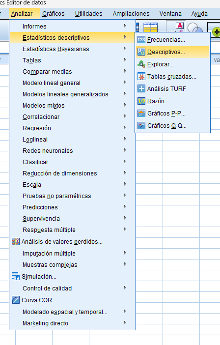
Se abre una ventana con dos cuadros:
6. Izquierda: todas tus variables
7. Derecha: variables seleccionadas
8. Qué debes hacer:
a. Busca la variable que quieres analizar (por ejemplo: EDAD)
b. Haz clic sobre ella
c. Presiona la flecha ➡️
9. Verás que la variable se mueve al cuadro derecho.
10. Da clic en “Opciones…” Aquí es donde eliges qué cálculo quieres hacer.
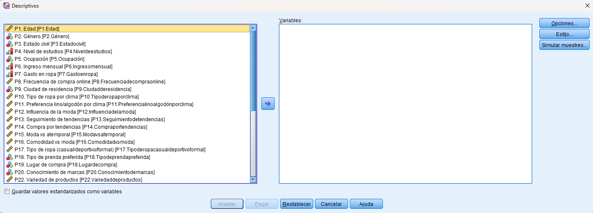
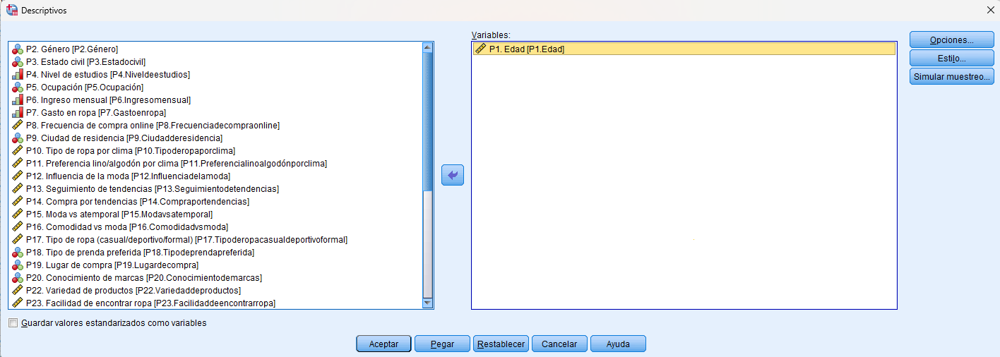
11. Elegir la media
a. Aparece una lista de opciones.
12. Marca la opción “Media”
a. (Opcional) puedes dejar las demás sin
marcar
b. Da clic en “Continuar”
c. Luego da clic en “Aceptar”
13. Se abre el visor de resultados.
a. Busca el valor de la media
b. Ese número es el promedio de tus datos
14. De nuevo el menú principal de SPSS.
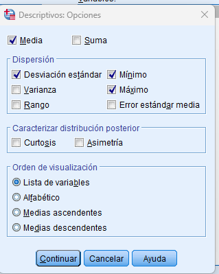
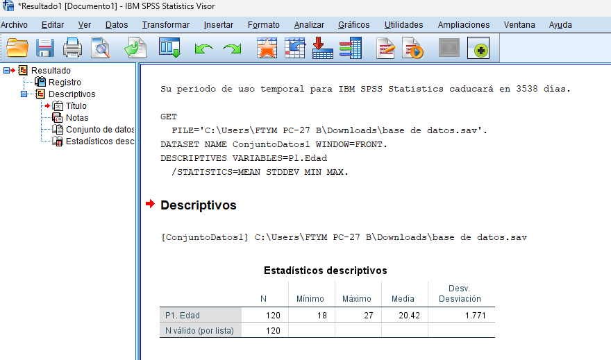
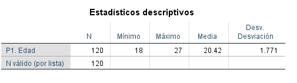
a. Da clic en Analizar
b. Selecciona Estadísticos descriptivos
c. Da clic en Frecuencias NOTA: Ahora vas a analizar cómo se distribuyen los datos y cuál es su valor central.
15. Selección de variable
a. Busca la variable que deseas analizar
b. Haz clic sobre ella
c. Presiona la flecha ➡️para mover al cuadro derecho NOTA: Estás seleccionando la variable sobre la cual quieres calcular la mediana.
16. Ubica el botón “Estadísticos…”
a. Da clic sobre él. NOTA: Aquí eliges qué medida quieres calcular.
17. Seleccionar mediana
a. Marca la opción “Mediana”
b. Da clic en “Continuar”
c. Después en “Aceptar”
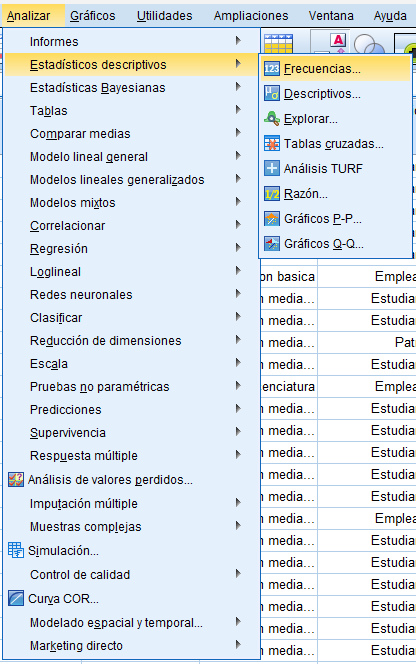
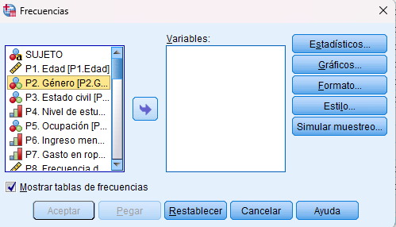
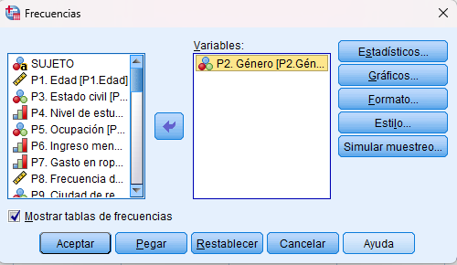
NOTA: Estás pidiendo a SPSS que calcule el valor central de los datos. NOTA: La muestra está compuesta por 120 personas jóvenes, con edades entre 18 y 27 años y un promedio de 20.42, mostrando poca variación. En cuanto al género, predominan las mujeres con un 60.8%, seguidas de los hombres con 38.3% y un 0.8% que prefirió no decirlo. En general, se trata de una población homogénea en edad y mayoritariamente femenina.
18. Las medidas de dispersión, como la varianza y la desviación estándar, permiten conocer qué tan alejados están los datos respecto al promedio. Aunque dos conjuntos de datos tengan la misma media, pueden diferir en su dispersión. La varianza mide el grado de variabilidad de los datos, mientras que la desviación estándar (su raíz cuadrada) es más utilizada porque se expresa en las mismas unidades que los datos. Un valor más alto en estas medidas indica mayor dispersión. En SPSS, se obtienen desde Analizar → Estadísticos descriptivos → Descriptivos, seleccionando la variable y activando ambas opciones.
19. Para calcular la varianza y desviación estándar se debe hacer clic en el menú.
20. Ir a Analizar
a. Seleccionar Estadísticos descriptivos →
b. Elegir la variable
c. Dar clic en Opciones
d. Marcar:
e. Desviación estándar
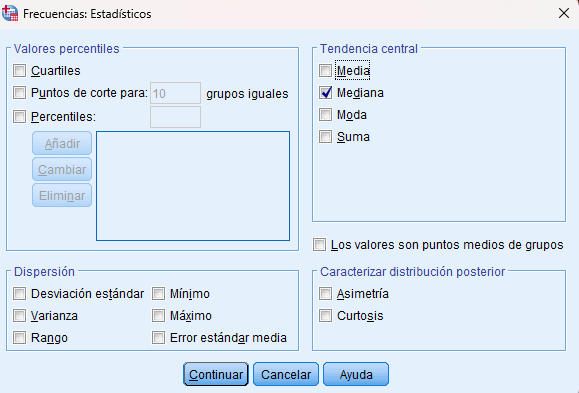
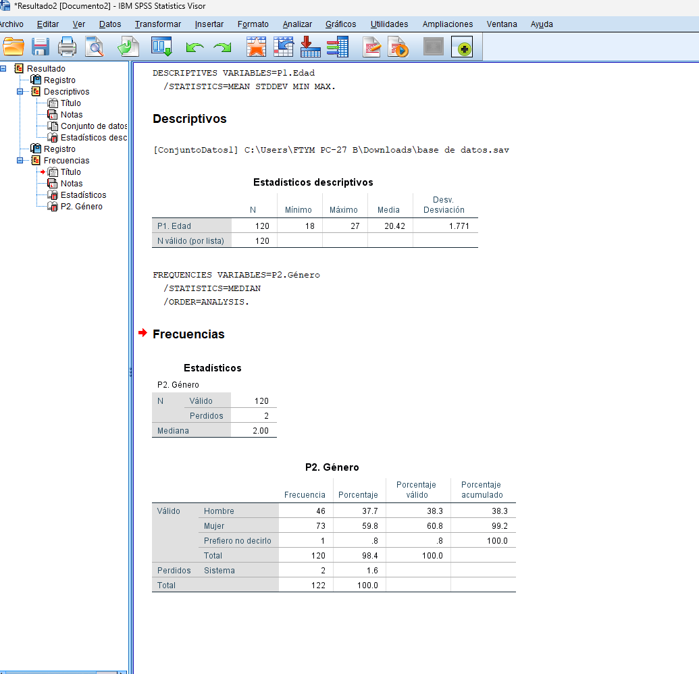
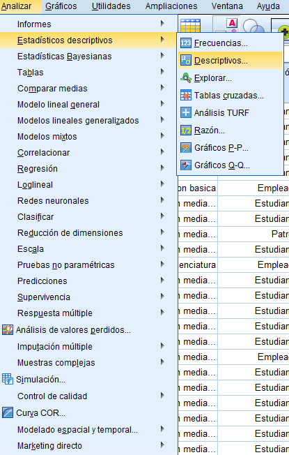
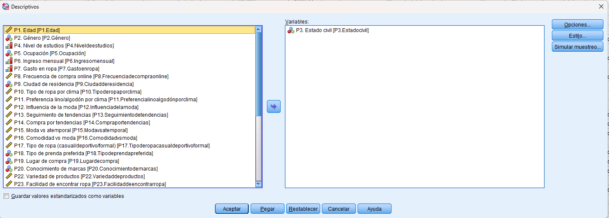
f. Varianza
g. Dar clic en Continuar
h. Presionar Aceptar NOTA: Estás analizando qué tan dispersos están los datos.
21. Ubica los valores de:
a. Desviación estándar
b. Varianza
22. Análisis de Respuestas de Selección Múltiple: Es común que las investigaciones de mercado o estudios donde se apliquen cuestionarios, posean respuestas de selección múltiple, o en otras palabras, aquellas respuestas donde el encuestado puede responder con más de una opción. Para estos casos SPSS requiere ser trabajado de manera especial, tanto en el ingreso de este tipo de preguntas al Software, como para su posterior análisis
23. Ir a Analizar
a. Seleccionar Respuesta múltiple
b. Dar clic en Definir conjuntos de variables NOTA: Estás preparando los datos para analizar preguntas donde se pueden elegir varias respuestas.
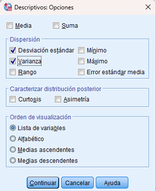
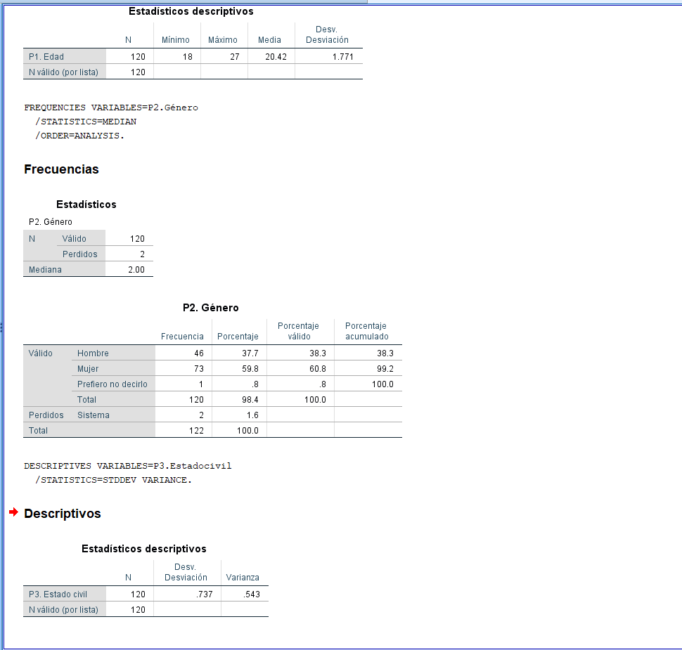
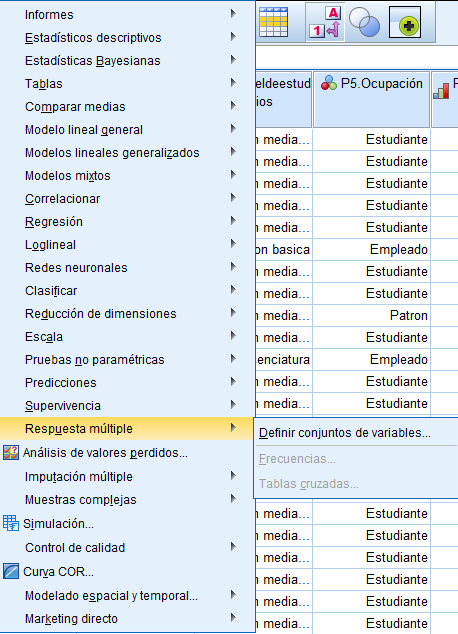
24. Selecciona las opciones deseadas para utilizar como alternativa.
a. Pásalas al lado derecho NOTA: Cada opción es tratada como una variable independiente.
25. Escribir 1 como valor válido
a. Asignar un nombre al conjunto
b. Dar clic en Añadir NOTA: así el conjunto de respuestas estará creado y se podrá realizar los análisis de respuestas múltiples con SPSS Una vez definido el conjunto de datos, es posible realizar los análisis. Resulta necesario mencionar que los análisis que se pueden realizar con este tipo de preguntas son bastante pocos, y se limitan a tablas de contingencia y análisis de frecuencia. El procedimiento para realizar dichos análisis se describe a continuación:
26. Ir a Analizar → Respuesta múltiple →
a. Seleccionar el conjunto creado
b. Pasarlo al lado derecho
c. Dar clic en Aceptar
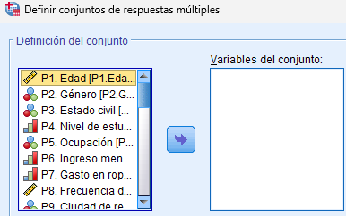
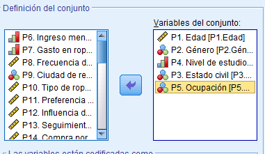
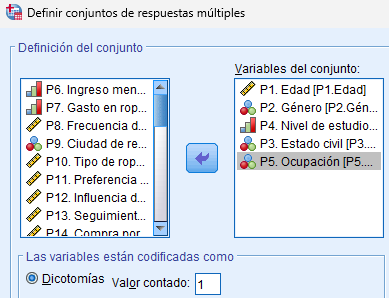
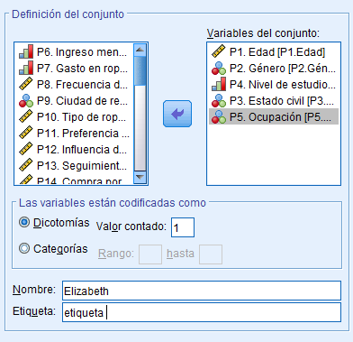
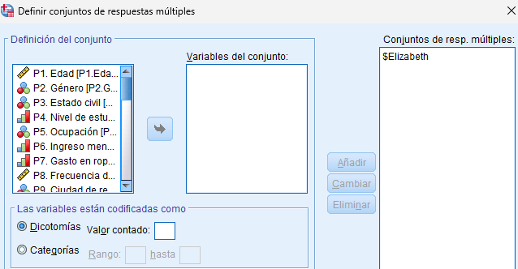
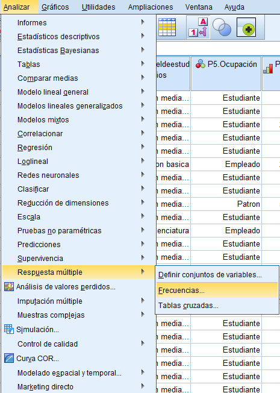
27. Una tabla con porcentajes de cada opción.
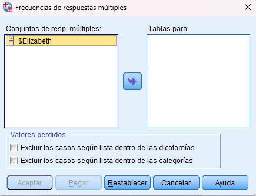
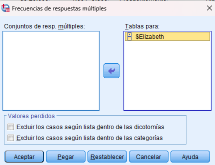
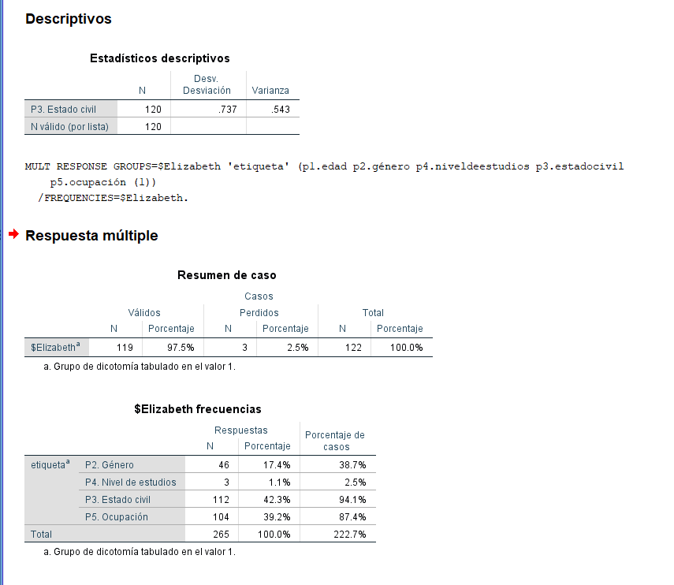